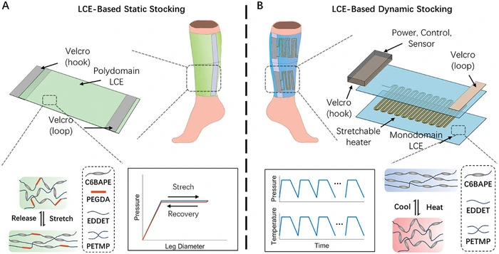
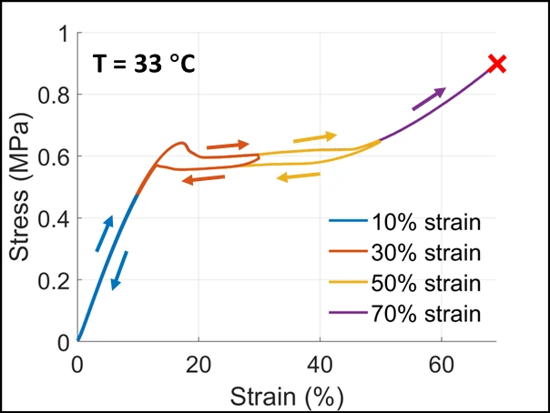
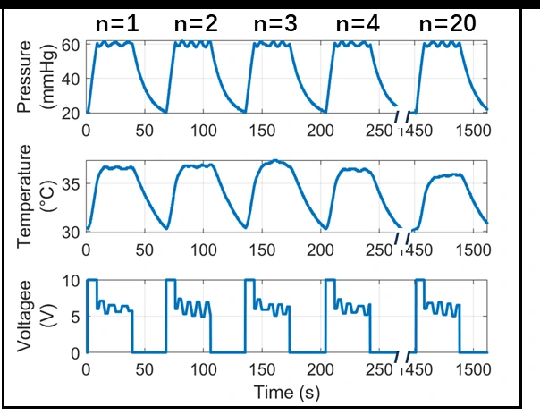

Smart materials / Wearables
LCE Compression Therapy
Soft actuation that adapts to the body.
Material synthesis, characterization and rapid prototyping for adjustable wearable compression.
- Context
- UC San Diego · Cai Lab
- Period
- Jun 2023–Apr 2025
- My contribution
- Undergraduate researcher · experimental design & prototyping
Evaluation at a glance
The published team study demonstrated approximately 20–60 mmHg of dynamic compression. Material tests and repeated actuation traces connect the wearable response to the material behavior.
Introduction
Accommodate the body while controlling compression.
Adjustable compression garments could help maintain useful pressure as a limb changes size. This study investigated liquid crystal elastomers (LCEs), soft polymers that deform with temperature, to provide static and thermally adjustable wearable compression.
I contributed experimental design, rapid prototyping, LCE synthesis and characterization, and MATLAB analysis. My characterization work included differential scanning calorimetry (DSC) and dynamic mechanical analysis (DMA), alongside thermal-actuation and embedded-heating experiments.

Design & methods
Connect synthesis, characterization and the wearable.
The material's soft elastic response helps accommodate changes in circumference. Heating changes its mechanical response, providing a route to adjustable compression. Material testing therefore informs both the wearable geometry and the actuation strategy.
My work connected laboratory synthesis and thermal/mechanical characterization with physical prototypes. CNC machining, laser cutting and 3D printing supported fabrication, while embedded heating experiments explored the connection between electrical input and material actuation.

Evaluation
Evaluate the material and the device response.
The published team study demonstrated dynamic compression of approximately 20–60 mmHg. Stress–strain data and repeated pressure–temperature–voltage traces show how material behavior translates into adjustable compression.
These collaborative device tests support the adjustable-compression concept. Evaluating pressure alongside temperature and electrical input connects the intended compression function to the material response and heating strategy.

Conclusion
Material characterization is a design tool.
This work resulted in a co-authored paper in Advanced Healthcare Materials. It strengthened my ability to turn material properties into prototype decisions and to connect fabrication, heating and measurement within a wearable system.
Image credits & project sources
System illustration: Figure 1, Dong, Zhao, Gao & Cai, Liquid Crystal Elastomer for Compression Therapy, Advanced Healthcare Materials 14(3), 2402881 (2025), CC BY 4.0. Graphs: original laboratory poster.
Creative Commons Attribution 4.0. The published illustration is reproduced without content changes; web images are resized for display.